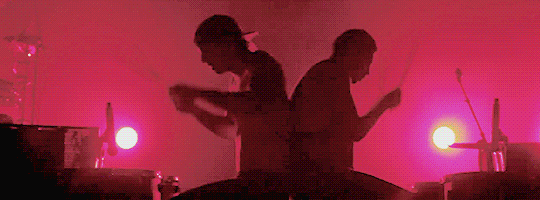

Skeleton Clique x Alen Clique
Jako grupa składamy się z 2 "części", a jednocześnie jednej. Łączymy Skeleton Clique (część Tylera) i Alen Clique (część Jishwy). W większości fandomów wiek jest podobny, u nas to nie występuje. Przedział wiekowy waha się od 13 do nawet nie wiem. Przy mnie na koncercie zaręczyła się jakaś młoda para, a byli jeszcze starsi od nich. Na Facebooku jestem w wielu grupach fandomowych i Clique jest tym z najwyższym poziomem, nie obrażając innych.
